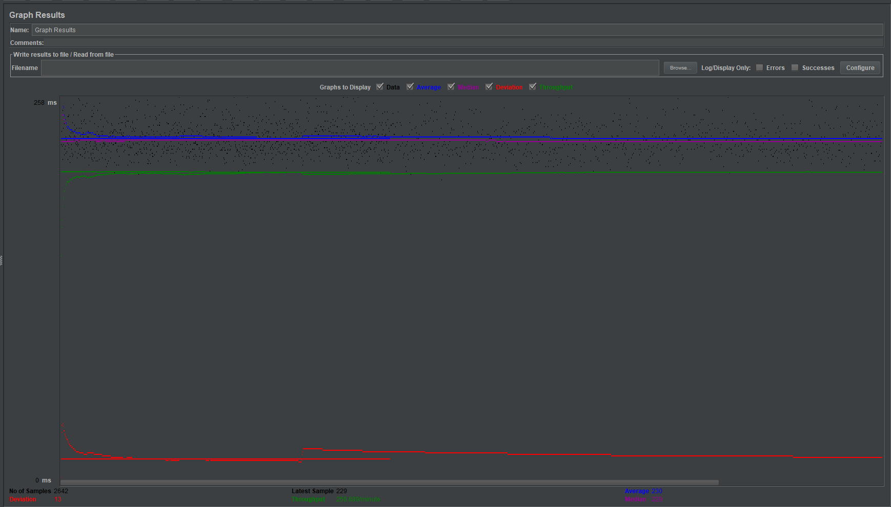
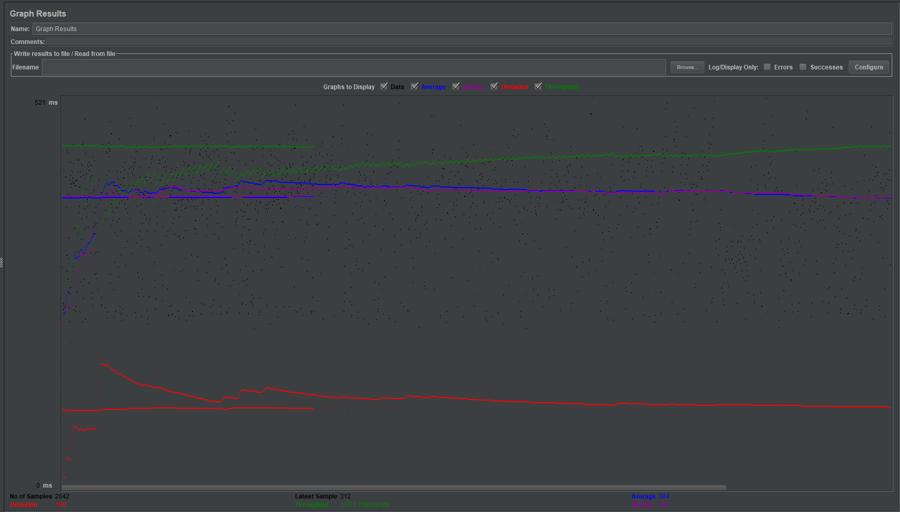
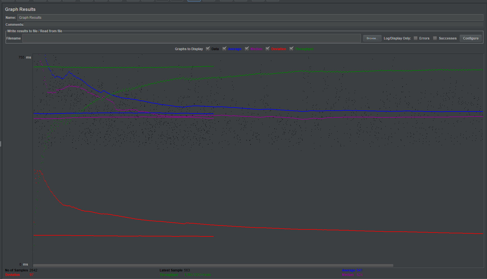
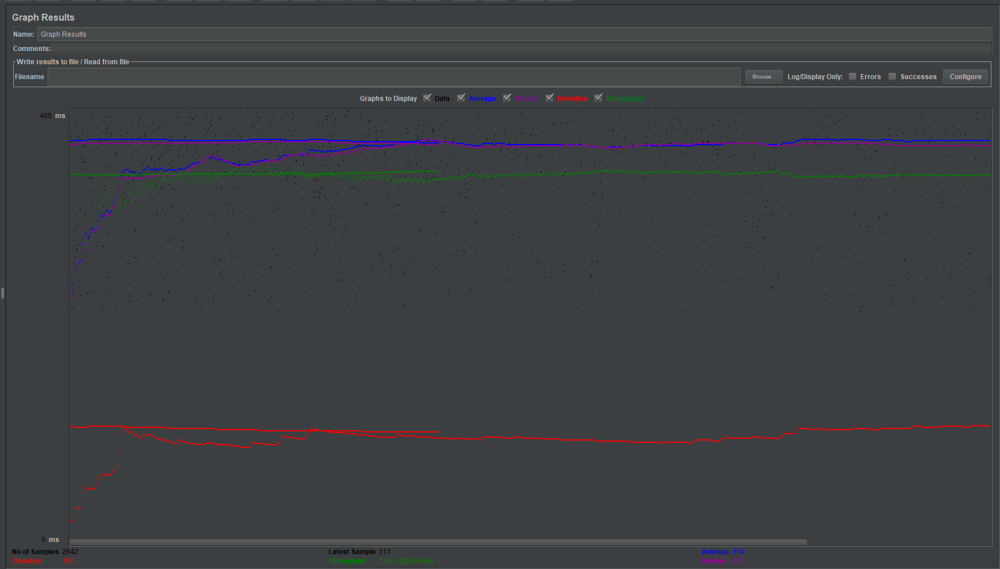
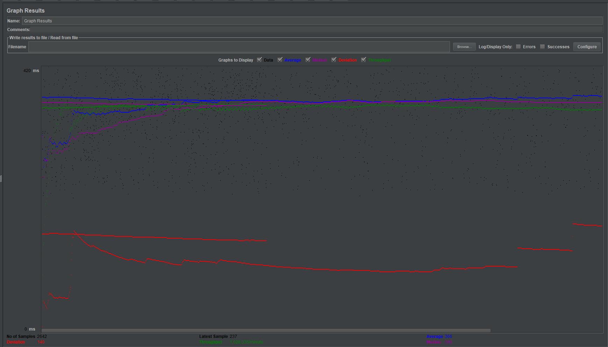

| Single-instance version cases |
Graph Results Screenshot |
Average Query Time(ms) |
Average Search Servlet Time(ms) |
Average JDBC Time(ms) |
Analysis |
| Case 1: HTTP/1 thread |
 |
230 |
29.424150008705517 |
29.06334498523842 |
A single thread repeatedly making requests seems to be able to do it faster than ten threads competing all at once. |
| Case 2: HTTP/10 threads |
 |
384 |
164.2464696468579 |
164.11490329901613 |
Seems comparable to the instances in which no connection-pooling/prepared statements were used. |
| Case 3: HTTPS/10 threads |
 |
541 |
112.75415386714604 |
112.58411100037814 |
The average query time is the longest here, and that makes sense given that more processing and redirecting is necessary. |
| Case 4: HTTP/10 threads/No prepared statements |
 |
374 |
152.77562996479887 |
152.64916578236168 |
comparable to the instance with prepared statements. |
| Case 5: HTTP/10 threads/No connection pooling |
 |
366 |
140.27827779712345 |
140.15505429712323 |
comparable to the instances in which prepared statements were both used and not used. |